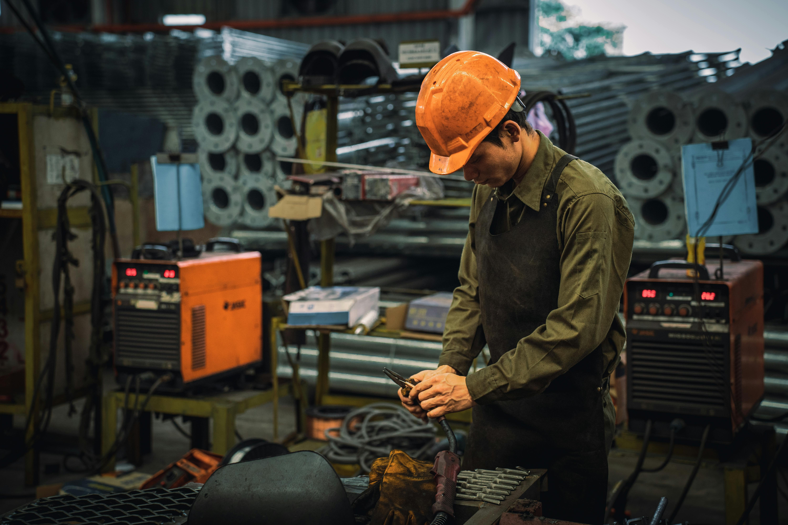

Serviços que prestamos
Ensino técnico
Conecte-se com o futuro da indústria. Comece pelo ensino técnico. Os cursos técnicos do SENAI/SC são desenvolvidos para preparar você de forma rápida e eficiente para ingressar no mercado de trabalho. Com duração média de 1 a 2 anos, eles oferecem uma formação prática e alinhada às necessidades reais das empresas. Você aprenderá com profissionais experientes em laboratórios modernos e ambientes simulados que reproduzem o dia a dia da indústria. Além disso, muitos cursos oferecem estágios supervisionados e parcerias com empresas, aumentando suas chances de contratação imediata após a conclusão. Seja nas áreas de Tecnologia da Informação, Mecânica, Eletrotécnica, Logística, Segurança do Trabalho, Alimentos, Construção Civil ou Saúde, o ensino técnico é ideal para quem busca uma formação rápida, acessível e altamente valorizada no mercado.

Depoimento 1 — Lucas Andrade, Técnico em Informática
"O curso técnico superou minhas expectativas! Em menos de dois anos, já estava trabalhando na área. As aulas práticas e o suporte dos professores fizeram toda a diferença."
Depoimento 2 — Camila Silva, Técnica em Enfermagem
"Sempre tive vontade de entrar na área da saúde, mas achava que levaria muito tempo. O curso técnico me deu a base que eu precisava e já estou atuando como auxiliar de enfermagem!"
Ensino superior
Formação superior com foco na indústria e no futuro profissional. A graduação no SENAI/SC vai além do ensino tradicional. Nossos cursos de nível superior — tecnólogos e bacharelados — foram criados para formar profissionais capazes de transformar realidades com conhecimento prático e visão estratégica. Com metodologias ativas de aprendizagem, os alunos participam de projetos integradores, desenvolvem soluções reais para empresas e são incentivados a empreender desde o início do curso. A proximidade com o setor produtivo garante uma formação alinhada às demandas do mercado e abre portas para uma carreira sólida e promissora. Oferecemos cursos nas áreas de Engenharia, Gestão, Design, Tecnologia da Informação e outras ligadas à inovação industrial, tanto na modalidade presencial quanto EAD, com total suporte de tutores e acesso a recursos digitais de ponta.
Depoimento 1 — Vinícius Pereira, Graduando em Administração
"Escolhi essa faculdade pela qualidade do ensino e não me arrependo. Os professores são muito preparados e o conteúdo é sempre atualizado. Me sinto pronto para os desafios da profissão."
Depoimento 2 — Jéssica Moura, Graduanda em Pedagogia (EAD)
"A flexibilidade do curso EAD me permitiu estudar e trabalhar ao mesmo tempo. A plataforma é fácil de usar e os tutores sempre me apoiaram nas dúvidas.".
Pós-graduação
Especialize-se, atualize-se, destaque-se. A pós-graduação do SENAI/SC é pensada para quem deseja ir além da graduação e conquistar novos espaços no mercado. Com foco em aplicação prática e atualização profissional, nossos cursos de especialização são ideais para quem busca se destacar em um mundo em constante transformação. As aulas são ministradas por especialistas que atuam diretamente no setor industrial, garantindo uma formação alinhada às tendências e desafios do mercado. Os conteúdos são atualizados, com uso de metodologias inovadoras, estudos de caso e desenvolvimento de projetos aplicados. Disponíveis nas modalidades presencial e a distância, os cursos abrangem áreas como Gestão Industrial, Engenharia de Produção, Inovação e Tecnologia, Sustentabilidade, Qualidade, Logística, Transformação Digital e muito mais.
Depoimento 1 — Rafael Lima, Especialista em Gestão de Projetos
"A pós foi essencial para minha promoção no trabalho. Além de aprofundar meus conhecimentos, pude trocar experiências com profissionais de várias áreas."
Depoimento 2 — Daniela Torres, Pós-graduada em Marketing Digital
"Fiquei impressionada com o conteúdo prático da pós. As aulas online são dinâmicas, e os professores realmente entendem do mercado. Valeu cada minuto!"